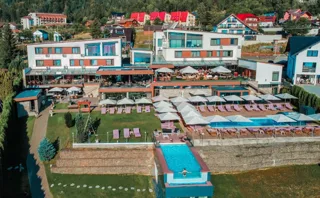
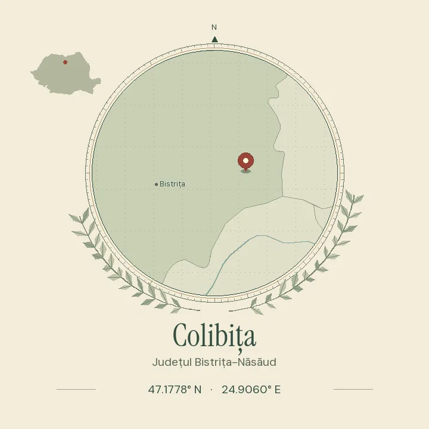
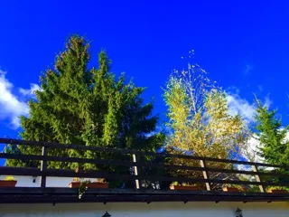

Locații de nuntă în Colibița
- locații în director
- 4
- cu cazare în registrul SITUR
- 2
- medie ponderată Google
- 4,6 / 5
- evaluări Google
- 3.308
Cum alegi o locație în Colibița
În Colibița poți începe comparația cu Hotel Roser House Colibita (hotel), Pensiunea Lac Colibita (bed & breakfast), Pensiunea Encian (hotel). Aceste proprietăți apar în primele poziții când luăm în calcul împreună nota și numărul de evaluări Google. Salvează adresele care vă interesează pentru a le așeza apoi alături în fișa de comparare a ofertelor.
În fișele proprietăților poți compara dotări concrete la Hotel Roser House Colibita (cazare, parcare gratuită, piscină), Pensiunea Lac Colibita (cazare, parcare gratuită, wi-fi gratuit). Pentru oferta de nuntă, întreabă ce spații și servicii dintre cele prezentate intră în rezervarea privată pentru data voastră.
Dacă vin rude de departe, Hotel Roser House Colibita are o unitate de cazare asociată în registrul SITUR. Înregistrarea pentru Roser House cuprinde 28 de locuri de dormit în 14 spații de cazare. Întreabă câte camere pot fi păstrate pentru aceeași noapte înainte să trimiți invitaților detaliile de rezervare.
Dacă vrei să vezi două proprietăți în aceeași zi, poți continua de la Pensiunea Lac Colibita spre Pensiunea Daniela din Piatra Fântânele. Punctele lor sunt la 11,7 km în linie dreaptă. Deschide traseul înainte să fixezi ora celei de-a doua vizite, mai ales dacă grupul se deplasează cu autocarul.
Locații pentru vizionare
Ordinea ține cont de nota Google și de numărul evaluărilor. Cum calculăm ordinea
Fotografie a locației · Sursa fotografiei Colibița · Hotel
Hotel Roser House Colibita
Hotel Roser House Colibita. De la fereastra de la Roser House, un oaspete descrie cum se schimbă priveliștea dintre lacul Colibița și crestele munților.
269, 427007 Colibița+40 756 169 531
Fotografie a locației · Sursa fotografiei Colibița · Bed & Breakfast
Pensiunea Lac Colibita
Pensiunea Lac Colibita. La Lac Colibița, un oaspete descrie florile din jurul pensiunii, vederea spre apă și micul dejun cu produse locale.
DJ173A, 427007 Colibița+40 740 034 324
Hartă ilustrată Colibița · Hotel
Pensiunea Encian
Pensiunea Encian, Colibița. La Encian, un oaspete care a stat vara a rezervat un apartament cu două camere și vedere la lac.
Strada Principala, Nr. 255 B, 427007 Colibița+40 740 828 706
Fotografie a locației · Sursa fotografiei Colibița · Bed & Breakfast
Casa dintre Brazi
B&B în Colibița cu prețuri între 252 și 390 de lei pe noapte și recenzii împărțite: camere mici, pereți subțiri, gazdă lăudată de unii.
Nr. 228 A, 427007 Colibița+40 770 606 549
Întrebări despre locațiile din Colibița
Unde pot dormi invitații în Colibița?
În registrul de cazare SITUR găsim Hotel Roser House Colibita (28 de locuri de cazare), Pensiunea Encian (8 locuri de cazare). Verifică ce camere sunt libere pentru noaptea evenimentului.
Care locație din Colibița are cele mai multe evaluări Google?
Hotel Roser House Colibita are 2.255 de evaluări în profilul Google folosit la documentare. Evaluările acoperă și alte experiențe la proprietate, inclusiv vizitele fără eveniment.
Ce alte localități pot include într-o vizionare lângă Colibița?
Cele mai apropiate adrese comparate pe hartă sunt în Piatra Fântânele, Dorolea, Bistrița. Găsești mai jos distanțele dintre proprietățile folosite pentru această comparație.
Vizionări în apropiere
- Piatra Fântânele · 1 locație. Între Pensiunea Lac Colibita și Pensiunea Daniela sunt 11,7 km în linie dreaptă.
- Dorolea · 1 locație. Între Hotel Roser House Colibita și Pensiunea Elis sunt 20,7 km în linie dreaptă.
- Bistrița · 11 locații. Între Hotel Roser House Colibita și Pensiunea Conacul lui Horia sunt 23,6 km în linie dreaptă.